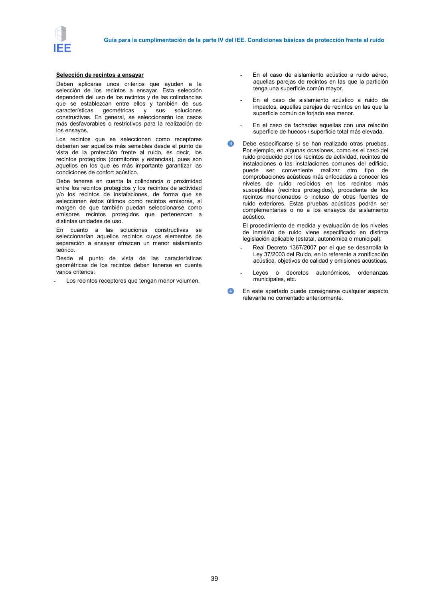

GUIA · Página 39 · versión 2016-11-01
SHA256: 813669d3066c0ff79457d57b80b0512a4fbb248bc5db1f7baf473c369a064738 · página física 39 de 65 · métodos de encabezado
solo si están cotejados.
Formatos: Markdown · JSON de bloques · PDF p. 39 · imagen PNG
Guía para la cumplimentación de la parte IV del IEE. Condiciones básicas de protección frente al ruido 39 Selección de recintos a ensayar Deben aplicarse unos criterios que ayuden a la selección de los recintos a ensayar. Esta selección dependerá del uso de los recintos y de las colindancias que se establezcan entre ellos y también de sus características geométricas y sus soluciones constructivas. En general, se seleccionarán los casos más desfavorables o restrictivos para la realización de los ensayos. Los recintos que se seleccionen como receptores deberían ser aquellos más sensibles desde el punto de vista de la protección frente al ruido, es decir, los recintos protegidos (dormitorios y estancias), pues son aquellos en los que es más importante garantizar las condiciones de confort acústico. Debe tenerse en cuenta la colindancia o proximidad entre los recintos protegidos y los recintos de actividad y/o los recintos de instalaciones, de forma que se seleccionen éstos últimos como recintos emisores, al margen de que también puedan seleccionarse como emisores recintos protegidos que pertenezcan a distintas unidades de uso. En cuanto a las soluciones constructivas se seleccionarían aquellos recintos cuyos elementos de separación a ensayar ofrezcan un menor aislamiento teórico. Desde el punto de vista de las características geométricas de los recintos deben tenerse en cuenta varios criterios: - Los recintos receptores que tengan menor volumen. - En el caso de aislamiento acústico a ruido aéreo, aquellas parejas de recintos en las que la partición tenga una superficie común mayor. - En el caso de aislamiento acústico a ruido de impactos, aquellas parejas de recintos en las que la superficie común de forjado sea menor. - En el caso de fachadas aquellas con una relación superficie de huecos / superficie total más elevada. ❸ Debe especificarse si se han realizado otras pruebas. Por ejemplo, en algunas ocasiones, como es el caso del ruido producido por los recintos de actividad, recintos de instalaciones o las instalaciones comunes del edificio, puede ser conveniente realizar otro tipo de comprobaciones acústicas más enfocadas a conocer los niveles de ruido recibidos en los recintos más susceptibles (recintos protegidos), procedente de los recintos mencionados o incluso de otras fuentes de ruido exteriores. Estas pruebas acústicas podrán ser complementarias o no a los ensayos de aislamiento acústico. El procedimiento de medida y evaluación de los niveles de inmisión de ruido viene especificado en distinta legislación aplicable (estatal, autonómica o municipal): - Real Decreto 1367/2007 por el que se desarrolla la Ley 37/2003 del Ruido, en lo referente a zonificación acústica, objetivos de calidad y emisiones acústicas. - Leyes o decretos autonómicos, ordenanzas municipales, etc. ❹ En este apartado puede consignarse cualquier aspecto relevante no comentado anteriormente.
